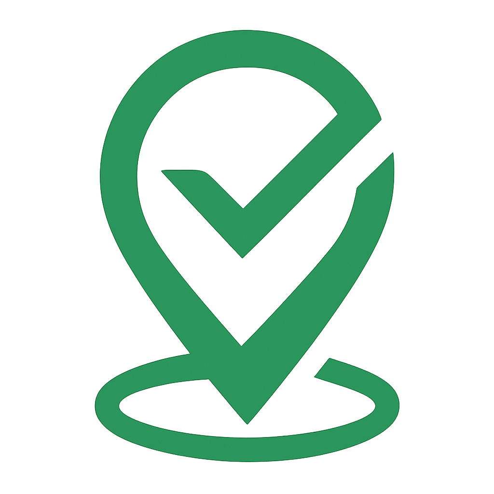

<nav class="navbar">
  <div class="nav-left">
    <a routerLink="/home" class="logo-navbar">
      
    </a>

    


    <a routerLink="/home" class="nav-link desktop-only" title="Home">Home</a>
    <a *ngIf="canManageUsers()" routerLink="/users" class="nav-link desktop-only" title="Users">Utenti</a>
    <a routerLink="/contacts" class="nav-link desktop-only" title="Contatti">Contatti</a>
  </div>

  <button class="mobile-toggle" (click)="toggleMobileMenu()" aria-label="Apri menu">
    ☰
  </button>


  <div class="nav-right desktop-only">
    <ng-container *ngIf="isAuthenticated; else guestLinks">
      <div class="dropdown" (click)="toggleDropdown()">
        <button class="dropdown-btn" title="Account">Account ☰</button>
        <div class="dropdown-menu" *ngIf="dropdownOpen">
          <a routerLink="/user-info" class="dropdown-item" title="Il mio account">Il mio account</a>
          <a routerLink="/contributions" class="dropdown-item" title="I miei contributi">I miei contributi</a>
          <a (click)="logout()" class="dropdown-item" style="cursor: pointer;" title="Logout">Logout</a>
        </div>
      </div>
    </ng-container>

     <ng-template #guestLinks>
      <a routerLink="/login" class="auth-link" title="Login">Login</a>
      <a routerLink="/signup" class="auth-link" title="Sign Up">Sign Up</a>
    </ng-template>
  </div>

  <!-- Solo mobile -->
  <div class="mobile-menu" *ngIf="mobileMenuOpen">
    <a routerLink="/home" (click)="toggleMobileMenu()">Home</a>
    <a *ngIf="canManageUsers()" routerLink="/users">Utenti</a>
    <a routerLink="/contacts" (click)="toggleMobileMenu()">Contatti</a>
    <ng-container *ngIf="isAuthenticated; else mobileGuest">
      <div class="mobile-submenu">
        <button class="submenu-toggle" (click)="toggleAccountSubmenu()">
          Account 
          <span [class.open]="accountSubmenuOpen">▾</span>
        </button>
        <ul class="submenu-items" *ngIf="accountSubmenuOpen">
          <li><a routerLink="/user-info" (click)="toggleMobileMenu()">Il mio account</a></li>
          <li><a routerLink="/contributions" (click)="toggleMobileMenu()">I miei contributi</a></li>
          <li><a (click)="logout(); toggleMobileMenu()">Logout</a></li>
        </ul>
      </div>
    </ng-container>

    <ng-template #mobileGuest>
      <a routerLink="/login" (click)="toggleMobileMenu()">Login</a>
      <a routerLink="/signup" (click)="toggleMobileMenu()">Sign Up</a>
    </ng-template>
  </div>
</nav>
  